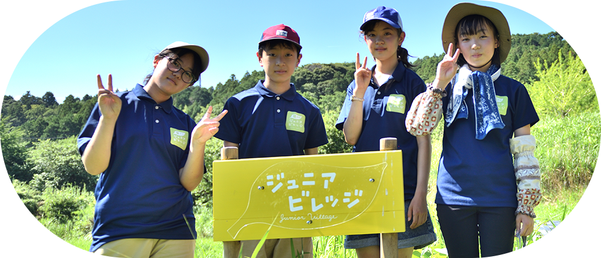
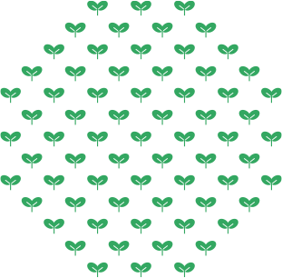

Newsお知らせ
What is a
Junior Village?
ジュニアビレッジって？


「考え、行動し、つくる」
これからの時代に必須の
力をつける学びの遊び場
小学1〜3年
はじめて探究コース
小学4〜6年
プロジェクト探究コース
小学5〜中2
経営チャレンジコース
Report 活動レポート
活動の様子やインタビュー記事をお見せします。

横浜
活動レポート
東急港北SCで販売に挑戦｜なぜジュニアビレッジの子どもたちは“当事者”になれるのか？
2026年2月28日（土）、横浜ジュニアビレッジ根っこ塾（経営チャレンジコース）の子どもたちが センター南駅前にある東急港北SCで、販売会を開催しました。 今回必ず売り切る！と決めていたのが、近く賞味期限を迎える「横浜た […]

横浜
土づくり
完熟堆肥づくりで変わる、子どもたちの“命の見え方”
横浜ジュニアビレッジ根っこ塾では、毎年12月から完熟堆肥づくりに取り組んでいます。 この活動は、単なる農作業ではなく、自然と人のくらしのつながりを体感し、 「自分のものさし」の土台を育てる、根っこ塾ならではの重要なプログ […]

横浜
寺家
寺家ジュニアビレッジ＆根っこ塾｜最高売上を更新！あおばを食べる収穫祭での合同販売会
— 売上123,580円。子どもたちが“自分たちでつくった”新記録 — 2025年11月23日（日）、横浜市青葉区藤が丘駅前で開催された「青葉を食べる収穫祭」マルシェに 寺家ジュニアビレッジ、横浜ジュニアビレッジ根っこ塾 […]

菊川
商品開発
菊川ジュニアビレッジ10周年｜たこまんとの商品開発と、10年の挑戦の軌跡
菊川ジュニアビレッジは、2025年で10周年を迎えました。 その節目となる今年、地元で長く愛されている菓子店「たこまん」様とともに、 2025年11月15日（土）に新商品開発に取り組み、プレスリリースを行いました。 でき […]

横浜
商品開発
日本ナポリタン学会が認定！子どもたちが開発した「ヨコハマクラフトマト」の物語
横浜ジュニアビレッジ根っこ塾で子どもたちが開発してきた商品 「ヨコハマクラフトマト」が、このたび日本ナポリタン学会の推奨商品に 認定されました。 横浜はナポリタン発祥の地。 その“横浜の食文化”を支える学会から評価をいた […]

横浜
土づくり
横浜ジュニアビレッジ｜ミミズは世界を救う！土壌改良プロジェクト始動
うまくいかなかった経験が、子どもたちの探究心に火をつけた 現在、横浜ジュニアビレッジでは、たまねぎの収穫が最盛期を迎えています。 収穫したたまねぎは、子どもたちが一部持ち帰るだけでなく、 ドレッシングの原材料として活用し […]
ONLINE SHOP
オンラインショップ
ジュニアビレッジの子ども達が作った
商品を購入することで
活動の支援につながります。